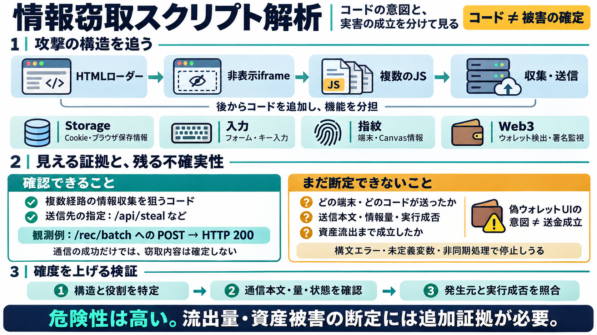

GitHub - Peter-Mfitumukiza/wallet-stealer-defense · GitHub
A defensive security skill for Claude Code that helps you detect, purge, and harden JavaScript/TypeScript repositories a…

HTMLローダー→非表示iframe→複数JS→通信先、そして「意図」と「成立」を分けて追います（解析ベース）。
メインHTML + /rivo-stealer 配下 iframe + stealer-3.js〜stealer-8.js 等
Cookie/Storage/フォーム/指紋/Web3/送信先（例：/api/steal）
JavaScriptは実行条件（iframe文脈・CSP・構文・非同期処理）で動作が変わります。だから実害確定には、実通信や実行成否の裏取りが必要です。
収集先（Cookie/Storage/指紋/Web3等）と送信先URL
端末ごとの実行成功 / ReferenceError など停止点
HTTP送信（本文/量/タイミング/ステータス）など観測証拠
攻撃は「最初から全部」ではなく、非表示iframeとDOM追加で機能を段階投入します。読む側は“どのコードが後から来るか”を追う必要があります。
非表示iframeを生成し、/rivo-stealer 配下を読み込み
stealer-3.js〜stealer-8.jsなどを後から追加し役割分担
データ収集は単一手法に依存せず、Cookie/Storage/フォーム/キー入力/指紋といった経路を複数組み合わせます（冗長化）。
localStorage・sessionStorage・IndexedDB列挙 / submit・定期フォーム読み / キーロギング
User-Agent / 画面情報 / フォント・Canvas（指紋）など
送信先として /api/steal、/api/beacon、/stealer-dashboard/api/handle-seed-phrase 等が想定されます。少なくとも /rec/batch へのPOSTでHTTP 200観測があったとされています。
/api/steal /api/beacon /stealer-dashboard/api/handle-seed-phrase
/rec/batch → POST（HTTP 200）
情報窃取は“広く浅く”ではなく、“複数経路で重ねる”設計です。結果として、どれかが失敗しても別経路で成功しうる構図になります。
Cookie列挙 / localStorage・sessionStorage / IndexedDB走査
フォーム内容の読み取り / submit捕捉 / キーロギング（一定件数・一定時間）
User-Agent・画面情報・フォント/Canvas等
window.ethereum等の存在からMetaMask等を判別し、アカウント/チェーン変更イベントや署名関連のフックを試みます。加えて、シードフレーズ候補の検出・別API送信も見られます。
MetaMask / WalletConnect / WalletLink存在検知・チェーンID取得・変更イベント監視
シードフレーズ候補を検出し、/handle-seed-phrase 系へ送信
stealer-auto.jsには“偽MetaMask画面”を用いた資産移転（Wallet Drainer）意図が含まれます。ただし送金先アドレスやgas形式、approve扱いなどの不整合から、実運用で資産流出まで成立するかは不確実とされています。
偽UI → RPC呼び出しの流れを試す（drainer）
送金先・パラメータ・gas形式・approve周りの不整合 / 承認フロー回避の困難
stealer-7.js/stealer-8.jsには未定義変数、非同期処理の待機不足、構文エラー、アンチデバッグ整合不備など“実行不確実性”が指摘されています。攻撃チェーンの途中で破綻しうる点が重要です。
ReferenceError / 構文エラーで停止し得る
await不足などでフック成立が不安定
呼び出し不整合が動作に影響する可能性
この調査の結論は、意図（コード）と成立（実通信）を分け、追加証拠で確度評価を更新する方針です。防御側も同じ分離が有効です。
ローダー/iframe/JS役割を特定（静的構造の把握）
通信先と“成功兆候”を追跡（本文/ヘッダ/量/ステータス）
情報窃取を意図したコード群の存在と、一部の通信観測は高確度です。一方で、情報流出量や資産流出を断定するには追加証拠が必要です。
複数経路の窃取機能（Storage/入力/指紋/Web3） + 送信の兆候
どの端末で・どのコードが・何を・どの量で送ったか（本文と成功状況）
このスライドは、ユーザー提示の調査メモ（HTML改ざん・stealer解析・通信観測の記述）を圧縮したものです。外部URLは提示されていないため、一般論の範囲で整理しています。
A defensive security skill for Claude Code that helps you detect, purge, and harden JavaScript/TypeScript repositories a…
networking botnet apt analysis malware rat malware-research av bypass worm redteam infostealer stealer-undetectable Up…
ioc incident-response cybersecurity malware-analysis cti threat-intelligence malware-detection security-research redline…
### Stage 3 Not available for static analysis. Generated dynamically by C2 per victim. Requires valid JWT and machine I…
## Full Technical Article For a detailed step-by-step breakdown and mitigation strategies, please read the full report …